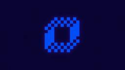

Socket
フィード
PHP and Composer Support Is Now in Beta
Socket
Socket’s PHP and Composer support is now in Beta for all customers, with PHP reachability analysis generally available.
21時間前
Socket Now Protects the Firefox Extension Ecosystem
Socket
Socket is bringing experimental protection to Firefox, scanning 97,000+ extensions in Mozilla's official directory for malware and risky updates.
2日前
Popular Rust Crates Compromised in Build-Time Supply Chain Attack
Socket
Three compromised Rust crates pulled in a malicious dependency that downloaded and executed cross-platform malware during Cargo builds.
2日前
77 Firefox Extensions Linked to Crypto Wallet and Credential Theft
Socket
Socket uncovered 77 linked Firefox extensions, including 40 that steal wallet secrets or credentials and 37 deceptive sports-score shells.
3日前
NIST Proposes AI-Enabled NVD Overhaul After Cutting Routine CVE Enrichment
Socket
NIST disclosed an unreleased AI tool called V-etalon and opened a broad inquiry into NVD modernization after years of automation plans produced no public enrichment system.
5日前

How AI Agents Expand the Software Supply Chain Attack Surface
Socket
In his AI Council 2026 talk, Feross Aboukhadijeh covers recent package compromises, vulnerability discovery, and a more automated security model.
6日前

White House Authorizes Private Companies to Conduct Offensive Cyber Operations
Socket
A new federal program will let vetted U.S. cybersecurity firms help investigate and disrupt foreign cybercrime groups under government direction.
9日前
737 Chrome VPN Extensions Linked to Brand Impersonation and Browser Traffic Redirection
Socket
The campaign amassed more than 75,000 installs by targeting Russian-speaking users seeking access to blocked services.
11日前
Free Business Plan Upgrades for Open Source Maintainers
Socket
Open source maintainers are under more pressure than ever. We're raising our open source program from the Team plan to the Business plan, free.
15日前
Ruby's Bundler 4.0.18 Extends Cooldown to bundle lock and bundle cache
Socket
The supply chain control that delays freshly published gems now covers lockfile generation and gem vendoring in Ruby projects.
16日前